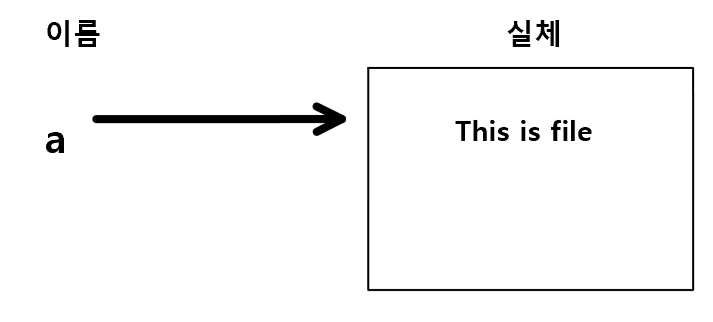
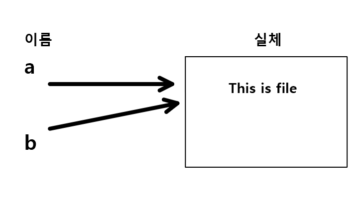
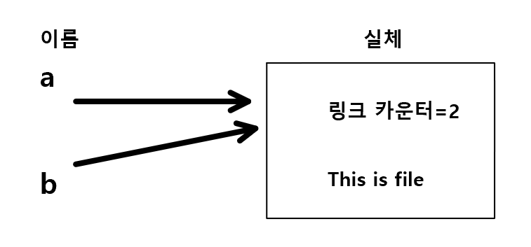
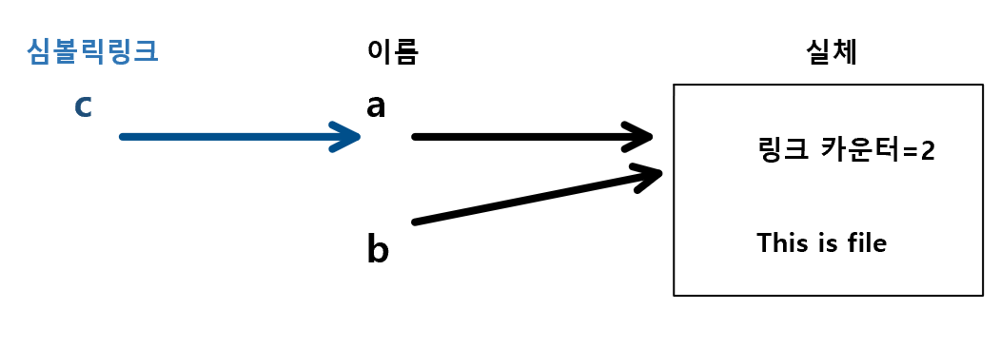

파일시스템 API <3> 링크 관련 함수: link(), symlink(), readlink(), unlink(), rename()
하드 링크
- 리눅스에서는 하나의 파일에 두 개 이상의 이름 지정할 수 있다.
- 링크: 파일에 새로운 이름을 붙이는 것
$ echo 'This is file' > a
- a파일을 만들었다.

-
파일의 이름과 파일의 실체의 관계는 위와 같다.
-
파일 a의 실체에 새로운 이름 b를 붙여본다. (하드 링크)
- ‘파일 a를 가리키는 하드 링크 b를 만든다’라고 한다.
$ ln a b

-
a의 내용을 바꾸면 b의 내용도 바뀐다. a와 b모두 같은 것을 가리키고 있기 때문이다.
-
파일에 부여된 이름의 개수는
ls -l을 사용하여 확인할 수 있다.
$ ls -l #왼쪽 두 번째가 링크 카운터
-rw-r--r-- 2 aamine users 13 Nov 14 00:15 a
-rw-r--r-- 2 aamine users 13 Nov 14 00:15 b

- rm을 했을 때, 실체가 삭제되는 것 XX, 이름이 삭제되는 것임
- 링크 카운터가 0이 되면, 비로소 실체가 삭제
link():2
- 하드 링크를 작성하는 System Call
#include <unistd.h>
int link(const char *src, const char *dest);
- link()는 src(원본) 지정한 파일에 dest 이름의 하드링크 만든다.
| return | value |
|---|---|
| 성공 | 0 |
| 실패 | -1 errno set |
- src와 dest는 동일한 파일 시스템上 이어야 한다.
- src와 dest는 디렉터리 XX
하드 링크 예제
#include <stdio.h>
#include <stdlib.h>
#include <unistd.h>
int main(int argc, char *argv[]){
if(argc!=3){
fprintf(stderr, "%s: wrong arguments\n", argv[0]);
exit(1);
}
if(link(argv[1], argv[2] < 0)){
perror(argv[1]);
exit(1);
}
exit(0);
}
심볼릭 링크
-
하드 링크는 이름과 실체를 연결하는 구조
심볼릭 링크는 이름에 이름을 연결하는 구조이다.  - 심볼릭 링크는 대응하는 실체가 존재하지 않아도 된다.
- 파일 시스템의 경계를 뛰어넘어 별명을 붙일 수 있다.
- 디렉터리에도 별명을 붙일 수 있다.
symlink():2
#include <unistd.h>
int symlink(const char *src, const char *dest);
- 심볼릭 링크를 만드는 시스템 콜
- *src(원본) *dest(심볼릭 링크)
| return | value |
|---|---|
| 성공 | 0 |
| 실패 | -1 errno set |
readlink():2
#include <unistd.h>
int readlink(const char *path, char *buf, size_t bufsize);
- 심볼릭 링크가 가리키는 이름을 얻는다.
| return | value |
|---|---|
| 성공 | buf에 포함된 바이트 수 반환 |
| 실패 | -1 errno set |
| parameter | Description |
|---|---|
| *path | 심볼릭 링크 path |
| *buf | 심볼릭 링크 path가 가리키는 이름을 담는 버퍼 문자열 마지막에 ‘\0’을 자동으로 추가 하지 않는점 주의! |
| bufsize | 최대 이만큼만 이름 저장한다. |
심볼릭링크 예제
#include <stdio.h>
#include <stdlib.h>
#include <unistd.h>
int main(int argc, char *argv[]){
if(argc!=3){
fprintf(stderr, "%s: wrong number of arguments\n", argv[0]);
exit(1);
}
if(symlink(argv[1], argv[2])<0){
perror(argv[1]);
exit(1);
}
exit(0);
}
파일삭제
- 리눅스에서 파일 삭제란, 링크 카운터 == 0이 되면 삭제되는 것이다!
즉 ‘실체에 붙인 이름 개수를 줄인다’는 뜻
unlink():2
#include <unistd.h>
int unlink(const char *path);
- 기능: *path로 지정한 이름을 삭제한다.
| return | value |
|---|---|
| 성공 | 0 |
| 실패 | -1 errno set |
주의!
- unlink()로 디렉터리를 삭제할 수는 없다!!!(rmdir()사용할 것)
- 심볼릭 링크를 unlink()로 삭제하면, 심볼릭 링크만 삭제되고 심볼릭 링크가 기리키는 실체 파일은 삭제되지 않는다.
unlink()를 사용해 rm 명령어 만들기
#include <stdio.h>
#include <stdlib.h>
#include <unistd.h>
int main(int argc, char *argv[]){
int i;
if(argc<2){
fprintf(stderr, "%s: no arguments\n", argv[0]);
exit(1);
}
for(i=1;i<argc;i++)){
if(unlink(argv[i]<0){
perror(argv[i]);
exit(1);
}
}
exit(0);
}
파일 이동
- 리눅스에서 파일을 이동한다 = 하드 링크만들고 이전 하드 링크 제거
$ mv a b
# 위 아래 같은 동작
$ ln a b
$ rm a
- 하지만! 조금 차이점은 있다. 하드 링크의 특징은 아래와 같다.
- 다른 파일 시스템X => rename() X
- 디렉터리 X => mv는 가능
rename():2
#include <stdio.h>
int rename(const char *src, const char *dest);
- 기능: 파일 이동 API. src를 dest로 변경한다.
| return | value |
|---|---|
| 성공 | 0 |
| 실패 | -1 errno set |
- 다른 파일 시스템X
- src와 dest가 다른 파일 시스템이면, rename은 실패하고 EXDEV가 errno에 set
rename()을 이용한 mv 구현
#include <stdio.h>
#include <stdlib.h>
#include <unistd.h>
int main(int argc, char *argv[]){
if(argc!=3){
fprintf(stderr,"%s: wrong arguments\n", argv[0]);
exit(1);
}
if (rename(argv[1]. argv[2]) <0){
perror(argv[1]);
exit(1);
}
exit(0);
}